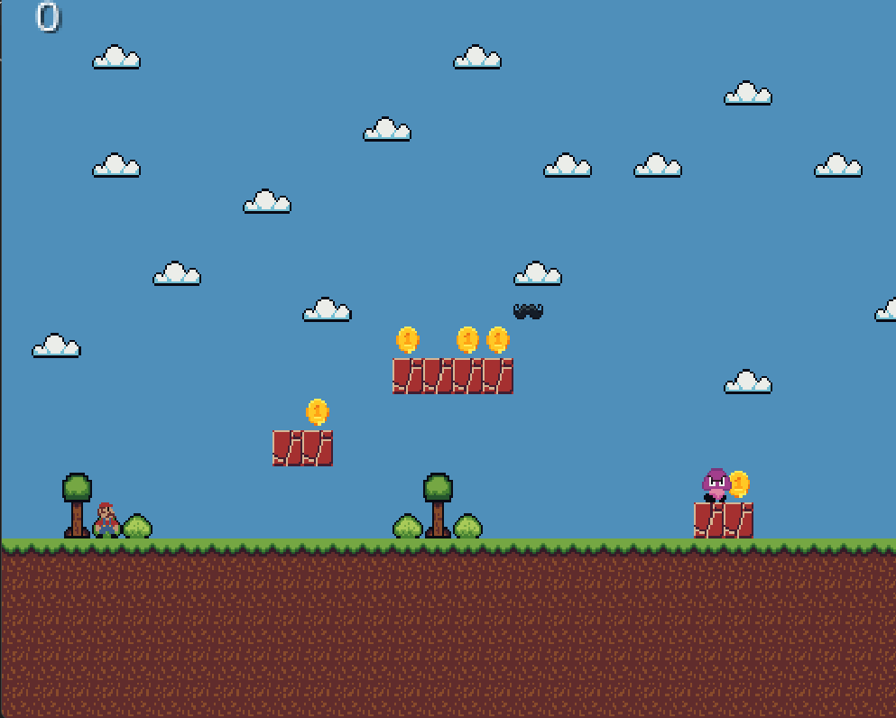
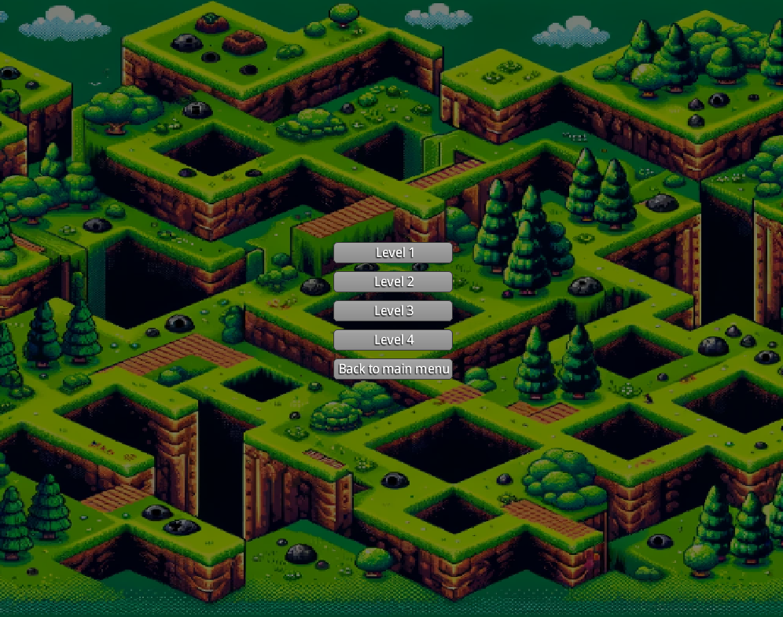

Velkommen til Moustache Mania!
Bloggpost om utvklingen av spilletGitHub repository til spillet
"Moustache Mania" er et spennende 2D plattformspill som ligner på klassikeren Super Mario. Her er en guide for hvordan du spiller spillet.

Spillkontroller
- Pil venstre: Beveg deg til venstre
- Pil høyre: Beveg deg til høyre
- Mellomrom: Hopp
- ESC: Pause
Spillmekanikker
I "Moustache Mania" skal du navigere gjennom forskjellige nivåer, samle mynter, og bekjempe fiender. Målet er å nå slutten av hvert nivå uten å bli eliminert av et monster eller falle utenfor banen.
Samleobjekter
På hvert nivå finner du forskjellige samleobjekter som hjelper deg på reisen:
- Mynter: Samle disse for å øke poengsummen din.
- Power-ups: Gir deg spesielle evner som gjør det lettere å fullføre nivåene.
Fiender
Pass på fiendene som prøver å stoppe deg. Du kan beseire dem ved å hoppe på dem.
Nivåer
Hvert nivå byr på nye utfordringer og farer. Utforsk nøye og finn alle hemmelighetene for å oppnå maksimal poengsum.
Tips og Triks
Her er noen tips for å mestre "Moustache Mania":
- Bruk power-ups strategisk for å overvinne vanskelige partier.
- Øv på timing for å mestre hopp og angrep.
Vi håper du koser deg med å spille "Moustache Mania"! Lykke til!